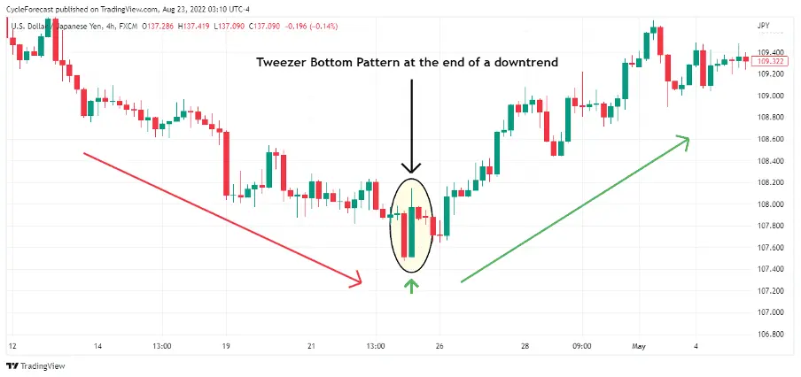

The Tweezer Bottom candlestick pattern is a bullish reversal candlestick pattern that is formed at the end of the downtrend.
It consists of two candlesticks, the first one being bearish and the second one being bullish candlestick.
Both the candlesticks make almost or the same low.
| What does Tweezer Bottom Candlestick Pattern tell us? |
When the Tweezer Bottom candlestick pattern is formed the prior trend is a downtrend.
A bearish tweezer candlestick is formed which looks like the continuation of the ongoing downtrend.
On the next day, the second day’s bullish candle’s low indicates a support level.
The bottom-most candles with almost the same low indicate the strength of the support and also signal that the downtrend may get reversed to form an uptrend.
Due to this the bulls step into action and move the price upwards.
This bullish reversal is confirmed the next day when the bullish candle is formed.
| Importance of this pattern: |
When the traders see the formation of tweezer top and bottom candlestick patterns on the charts, they should get cautious that reversal is going to place.
They should square off their position when this reversal pattern formed.
They should also confirm the formation of tweezer candlestick pattern with other technical indicators.
| Key Takeaways: |
